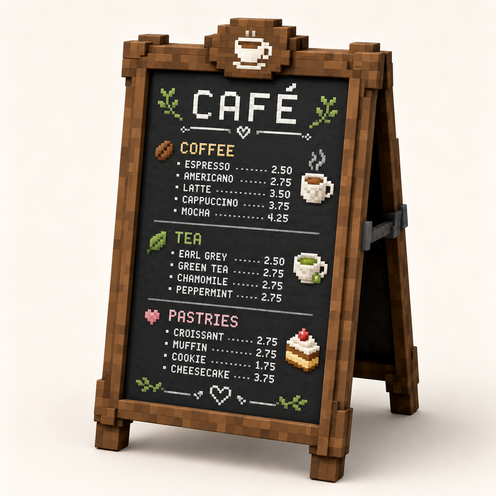

Build guide — detailed prop breakdown
Café chalkboard menu stand
Use this guide when you want to build a more detailed version of the Day-7 chalkboard: an A-frame café sign with chunky wood, a dark menu board, a top coffee badge, side supports, and UV-mapped chalk art.

The minimum successful version is: front board + wooden frame + two back legs + top coffee badge + one UV-mapped menu texture. The detailed menu text, leaves, cups, and cake icons are polish after the prop reads correctly.
1. Set up the model
-
New Generic Model
Create a new Generic Model namedcafe-chalkboard-stand. Save it before building. -
Use a front-facing scale
Treat the sign like a tall rectangle. Suggested overall size:X 10,Y 16,Z 4. The front face sits nearZ -1; the back legs lean towardZ 2. -
Choose the color plan
Stay close to the course palette: Wood for most frame pieces, Dark Wood for shadows and board, Cream for chalk, plus Leaf, Tomato, and Steel accents.
2. Build the big silhouette
Do this before any texture work. If the model reads as an A-frame chalkboard in flat colors, the final texture will have something solid to support.
| Part | Suggested size | Position idea | Color |
|---|---|---|---|
| Front chalkboard | X 8.2 · Y 12.5 · Z 0.35 | Centered, slightly tilted back | Dark Wood / near-black |
| Top rail | X 10 · Y 0.8 · Z 0.8 | Above board | Wood |
| Bottom rail | X 10 · Y 0.9 · Z 0.8 | Below board | Wood |
| Left side rail | X 0.8 · Y 14 · Z 0.8 | Left edge, slight inward angle | Wood |
| Right side rail | X 0.8 · Y 14 · Z 0.8 | Right edge, slight inward angle | Wood |
| Back legs | X 0.7 · Y 13 · Z 0.7 | Behind the sign, leaning back | Dark Wood |
| Feet blocks | X 1.1 · Y 0.8 · Z 1.2 | Four lower corners | Dark Wood |
For the front sign, a small X rotation backward is enough. For the rear legs, rotate them farther back so the side view forms an A shape. If rotation gets frustrating, keep the front rectangle straight and only angle the back legs.
3. Add the chunky frame detail
-
Layer small blocks on the corners
Add small square cubes over the four front corners. This creates the thick, toy-like corner plates visible in the reference. -
Add darker side strips
Place narrow Dark Wood strips just inside the left and right rails. These read as shadow gaps between the frame and the chalkboard. -
Break up the wood with patches
Add a few shallow Wood/Dark Wood rectangles on the rails, or paint tiny square patches later. Keep them sparse; the reference looks detailed because the big wood frame already works.
4. Build the top coffee badge
The badge is a separate decorative sign sitting above the main board. Make it chunky and simple.
-
Make a stepped round-ish badge
Use one center cube plus smaller side/top cubes to fake an octagonal wooden plaque. Fill it with Dark Wood, then add a Wood highlight strip. -
Add a simple cup icon
Build the cup as tiny cream cubes on the badge: a rectangle body, one darker coffee strip, and a one-cube handle on the side. Two light vertical cubes above it can read as steam. -
Stop before it becomes a second lesson
The cup only needs to read at thumbnail size. If it takes more than 10 minutes, simplify it to one cream rectangle and one handle cube.
5. Create the menu texture sheet
This is where the guide gets close to the reference image. Use one texture for the board face. Keep the art blocky and high contrast.
-
Create a 64 × 64 texture
Use 32 × 32 for a simpler version, or 64 × 64 if you want several menu sections like the reference. -
Reserve one large rectangle for the front board
Paint a dark board rectangle. This is the patch you will UV-map onto the front chalkboard face. -
Block in three menu sections
Use readable headings rather than tiny full text:CAFE,TEA, andCAKEare enough. Add short white lines or dotted rows under them to suggest prices. -
Add three icon zones
Add a coffee cup, a leaf, and a cake slice as small pixel icons. These sell the reference much faster than writing every menu item.
The reference has many words, but a beginner Blockbench prop does not need readable
ESPRESSO, AMERICANO, and prices yet. Use blocky headings, dots, and
short rows. The viewer will understand "menu."
6. UV-map the board face
-
Select the front board cube
In Edit mode, select the cube namedfront_boardorchalkboard_face. -
Find the visible face in the UV panel
Use the face tabs: North, South, East, West, Up, Down. The correct tab is the one that changes the visible front. -
Place the UV rectangle over the menu patch
Move and resize that face's UV rectangle so the whole menu art patch fills the front board. If the text is stretched, adjust the rectangle width/height. If it is upside down, rotate/flip the UV selection if available, or flip the art on the texture.
7. Add side hardware and rear support
The side bar in the reference makes the A-frame feel functional. Add it after the front already looks good.
-
Add a steel side hinge bar
On one side, place a thin Steel bar from the front frame to the back leg. Add two small darker end blocks as hinge plates. -
Add rear board darkness
Put a dark rectangle behind the front board or between the back legs. It gives the side view depth without needing a fully detailed back menu. -
Check the side silhouette
Orbit to a 3/4 view. The sign should read as a freestanding A-frame, not a flat poster.
8. Final polish pass
- Wood patches: add a few darker square marks on the frame, especially corners.
- Chalk smudges: add two or three grey/cream pixels near the menu lines.
- Depth: push the board face slightly behind the front frame so the frame wraps it.
- Readable render: capture a high 3/4 view where the board face and A-frame side are both visible.
If you only have one hour, build the silhouette and map a simple CAFE texture.
Save the detailed menu rows, icons, and wood patching for a second session. The prop succeeds when
it reads as a café chalkboard at thumbnail size.